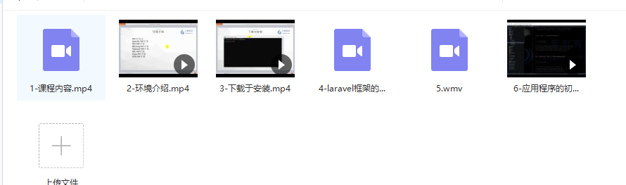
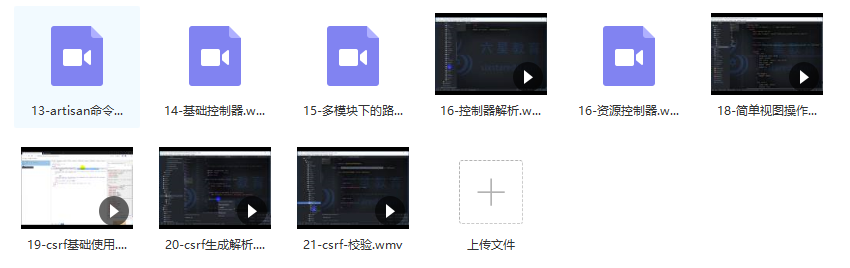
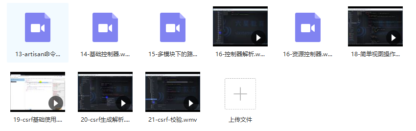

原文连接:https://www.cnblogs.com/it-3327/p/11802150.html
Laravel框架在php开发过程是不断进行优化的，当然也包括了本地环境的开发，下面我们就来具体看看laravel框架中的Homestead 开发环境的部署内容。
首先白以下几个概念
-
VirtualBox -- Oracle 公司的虚拟机软件, 能运行在当前大部分流行的系统上;
-
Vagrant 提供一种命令行接口, 允许自动化安装虚拟机, 并且因为是脚本编写成的
provision文本文件, 给共享虚拟机配置提供了可能, Homestead 正是构建在 Vagrant 之上; -
Laravel Homestead 是官方预封装的一个 Vagrant Box，它是一台虚拟机的原型, 用来快速生产一个配置完整的服务器虚拟机, 运行在 VirtualBox 上.
Homestead 生产出来的虚拟机提供了一个完整的开发环境, 有了这个环境, 就不用再担心各种软件的设置会搞乱你的操作系统啦.
因为是虚拟机, 出现故障的时候, 可以在几分种内完成销毁和重建.
Homestead 能运行在所有的Windows、Mac和Linux上，它包含了Nginx、PHP 5.5、MySQL、Postgres、Redis、Memcached和你开发 Laravel应用程序需要的所有其它软件。
在多人协同开的情况下, Homestead 能用来统一开发环境, 让程序员把精力更集中的放在程序业务逻辑上, 免去了各种因为开发环境不一样而造成的混乱.
约定
假设我们要开发一个项目, 项目的名字叫 mytwitter.
首先在我们存放代码的地方 code 文件夹里面创建项目根文件夹 mytwitter_project, 接下来咱们的操作都在此项目下进行
|
1 2 |
|
 

链接：https://pan.baidu.com/s/1v5gm7n0L7TGyejCmQrMh2g 提取码：x2p5
免费分享，但是X度限制严重，如若链接失效点击链接或搜索加群 群号518475424。
安装 virtualbox 和 vagrant
在这里下载并安装 VirtualBox , Vagrant .
直接下载 GUI 安装包安装就行.
下载并配置 Homestead
Homestead 包括以下两个东西
-
一个 vagrant box 虚拟机, 里面软件什么都下载好了;
-
Github 代码库, 里面装载着 vagrant 的配置脚本, 用来自动化配置网络, 端口映射, 等一些开发时候用到的配置
克隆 homestead 项目
在文件夹下克隆 homestead 项目到本地
|
1 |
|
加入 homestead box
执行以下命令添加 box
|
1 |
|
在线下载会很慢一般用迅
可以下载最新的box文件
|
1 |
|
下载后执行以下命令, 修改 /path/to/virtualbox.box 为正确的 path.
|
1 |
|
windows中执行如下命令
|
1 |
|
修改 homestead 的配置
根据你的情况修改 Homestead 项目里面文件 Homestead.yaml , 类似以下
|
1 2 3 4 5 6 7 8 9 10 11 12 |
|
配置 hosts 文件
修改本机的 hosts 文件, 允许通过自定义域名访问, 这个域名是在上面的 Homestead.yaml 里面设置的.
|
1 |
|
添加以下一行
|
1 |
|
初始化 homestead 虚拟机
|
1 2 3 4 5 |
|
生成启动后看提示信息。
最后测试是否能成功连接, 虚拟机里的 ~/mytwitter 文件夹里的文件和本地的文件是一致的.
|
1 2 |
|
浏览器访问 http://mytwitter.app:8000/ .
至此, 成功安装.